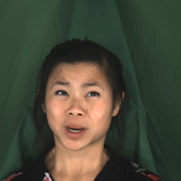

Text-to-Speech (TTS) system based on deep learning has witnessed significant progress. The naturalness and similarity of speech synthesized by the general TTS systems are close to human speech. Controllable zero-shot TTS has become a more challenging speech generation task, but current systems lack flexible control over emotional information. This paper proposes a controllable emotional Zero-Shot TTS system based on multi-modal prompt. The system use the text, image and speech prompt to control the emotion of generated speech and modeling the content, prosody and timbre separately. Firstly, we propose a multi-modal prompt emotion encoder based on the pretrained Emotion2Vec to extract the emotion information from the prompts. Then, we introduce a prosody predictor based on autoregressive transformer to predict the prosody and use the emotion consistency loss to retain emotional information in the predicted prosody. Finally, we introduce the diffusion-base acoustic model to generated target mel-spectrum. The subjective and objective experiments show that our method outperforms similar models in naturalness and similarity, and achieves more flexible emotion control.
Emotion Control Based On Speech Prompt
( Note that: in the 'Ours w/o MPEE', we replaced the proposed MPEE with the AMPE of MM-TTS.)
Speech Prompt
Text
GenerSpeech
Meta-StyleSpeech
MM-TTS
Ours w/o MPEE
Ours w/o ECL
Ours
don't ask me to carry an oily rag like that.
she had your dark suit in greasy wash water all year.
he ate four extra eggs for breakfast.
it was not whatever tale was told by tails.
Emotion Control Based On Image Prompt
Image Prompt
Text
MM-TTS
Ours w/o MPEE
Ours w/o ECL
Ours
no price is too high when true love is at stake.
don't ask me to carry an oily rag like that.
this was easy for us.

destroy every file related to my audits.
Emotion Control Based On Text Prompt
Text Prompt
Text
MM-TTS
Ours w/o MPEE
Ours w/o ECL
Ours
A man talks in a tone of happiness.
are your grades higher or lower than nancy's.
A man voices with a pitch of intense gloom.
she had your dark suit in greasy wash water all year.